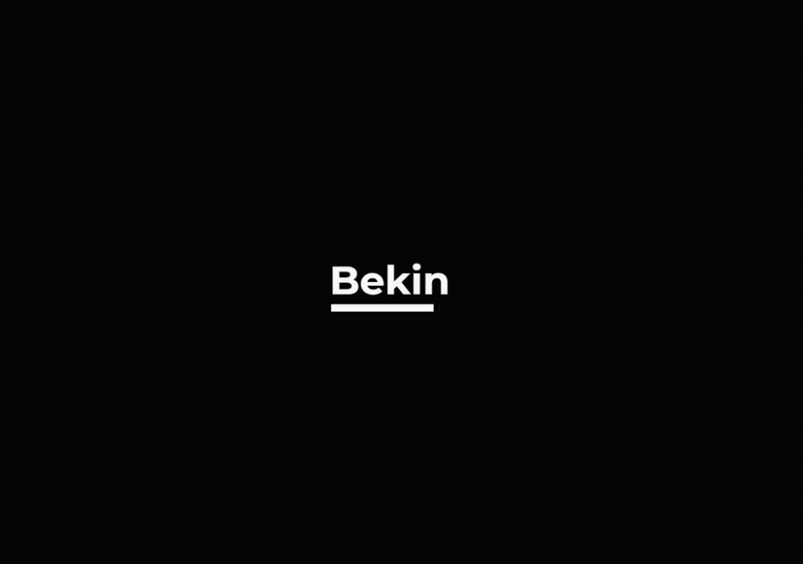

the subtle art of the website loading screen.
If you use technology, which you do, then loading screens are probably a part of your everyday life. so much so, in fact, that you probably don't even notice or care when interacting with a loading screen. the only times loading screens are particularly noticeable is when they take a long time or if they're doing something special. this post is about the latter. what makes a good loading screen? how can you create a nice loading screen experience while making the loading screen as lightweight as possible to minimize loading time? after all, the desired outcome of a loading screen is technically to disappear as quickly as possible. but, if it has to take a few seconds, it's ideal to keep the user occupied in some way. how?
there are many examples of great loading screens — mainly in games, software, and the web. I'll focus on the web, because I'm a web designer, but I will draw examples and inspirations from other media!
first off: what is a loading screen even for?
loading screens are a concept that originated in early video games, mainly as a way to give the user some indication that the computer was doing something. loading screens quickly evolved beyond something like a simple line of text that said "loading" — to include things like minigames, music, and flavor text. one well-known example of this is namco's 1993 title ridge racer, whose loading screen allows you to play a round of galaxian while the game is being prepared.

however, at the time that loading screens came to prominence, they weren't really necessary, or reasonable to use on the early internet (side note: I'm going to exclude flash-based sites from this post). websites weren't packed with multiple large javascript files, executing fancy ajax transitions or sending a hundred network requests to download images from a cdn. loading screens only started to become more common on the internet when websites started doing those things.
the earliest references I can find on the internet referring to loading screens being used on websites point to late 2010. websites started to use loading screens in order to hide the fact that the website had not fully rendered yet and also to avoid things like flashes of unstyled text — essentially some of the same reasons why they're used on the web today.
timeline of a loading screen.
I'm going to divide the lifespan of a website loading screen into four distinct parts:
1. the intro
2. the wait state
3. the outro / removing the loading screen
4. revealing the content
I'm including the post-load content reveal because it's a pretty important part of the loading screen. let's begin with the intro!
number one: the intro.
I'm defining the intro as 'what the user sees immediately upon and a few seconds after loading the site'. this is typically just a completely blank, white canvas upon which the content will be rendered. this is the transitional state immediately followed by rendering the loading screen, on top of and before any other content. the main idea of this section is to make sure that the loading screen is displayed as quickly as possible. basically, just make sure that any javascript related to the loading screen executes first, loading screen-related css loads first, etc.
number two: the wait state.
the wait state is basically the meat and potatoes of the loading screen, and contains all the most important elements of the loading screen. this is the part where you have to be careful about what you're loading / displaying, because again, the loading screen itself should be fairly lightweight. as a result, they can tend to be incredibly boring and meaningless (i.e. just showing a spinner animation). this is where I like to take inspiration from video games, a medium that's been getting loading screens right for like, thirty years.
there are five games that come to mind when I think about well-done loading screens: ridge racer, (the original) nier:automata, (a motion and ui design masterclass on it's own) assassin's creed, (a shining example of perfect, thematically appropriate interactivity) bayonetta, (whose loading screens can be just as fun as the game) and skyrim (a calm, minimal experience that enhances the gameplay) — as well as one music video.
I don't want to talk about all of these, because this post is going to get kinda long anyway, but I'll talk about a couple.
example one: nier:automata - simple text, minimal animation, engaging interaction.

yes, nier automata is essentially the greatest recent mainstream example of world-class ui design in games. more on that here, but I'm focusing on the loading screens.
nier's loading screen is the perfect example of a simple, elegant, interactive loading screen that would be feasible to implement as a website preloader. the animations are subtle but engaging, and the text options that the system presents to you are enough to interest (or at least confuse) the player while they wait. implementing something like this would most likely involve adding an artificial extra wait time so the user actually has time to interact with the screen, or perhaps some sort of 'continue' confirmation prompt so that the user can move on from it whenever they'd like.
a similar concept with less interactivity involves simply showing text to the user while they wait, along with a simple animation to spice things up. it works well, and is fairly unobtrusive. the text is randomized each time, to add some interesting flavor for a returning visitor.
another possibility is to use slightly more complex elements, albeit with limited, simple animation and interactivity, like in my second example....
example two: skyrim - simple flavor text, complex element with interaction / simple animation.

skyrim does this very well. the loading screen offers some simple flavor text that often is interesting to read, some minor smoke animation for texture, and a model from the game that you can spin around and move as you please.
in my opinion, however, when creating a loading screen for website, the best type of component to use is some sort of infinite, sequential animation. I've been churning these out like it's my job recently, just to practice and to have some decent ideas to work with when creating future loading screens — and that brings me to the third example.
example three: silentroom's nhelv - sequential, eye-catching animations.
again, I could probably write an entire blog post on how amazing the motion design is in this particular music video. it's crazy.

this seems to be a reference to early animation techniques like the one used by a phenakistiscope. animations like these are probably the type of thing most average users think of when they hear 'loading screen animation' or something like that, because the infinite, looping nature of it conveys some sense of waiting. the animation never 'resolves' during the wait state, it just repeats indefinitely. an animation like this is literally perfect for a website loading screen (even though this is from the beginning of a music video, lol).
the most important part to me is that the animation doesn't come to a reasonable resolution, or conclusion. it just represents the essence of waiting. note: I like to combine this type of element with something else, like a more complex element or something static, just for added visual interest. I've also been experimenting with 3d software to create infinitely looping animations...

...but I have yet to think of a good way to bring them into the arena of the web in a lightweight way. gif format? probably not. webgl? maybe....
number three: the outro, or removing the loading screen / number four: revealing the content.
these two are actually distinct stages, but the overlap is so significant that I'll combine it into one section.
also, this is the part where I typically take a lot of inspiration from other designer's loading screen animations. during my research I found about seven websites that exemplify the types of loading screens, which I've listed in my sources at the end of this article.
removing the loading screen is a delicate act. it needs to be done in a way that seamlessly blends into the content, or else the whole experience feels disjointed. usually what I like to do is use some animation on the background to remove it. sometimes a simple quick swipe away works, or some play on that:
another common method is simply fading out the screen. but there are many more interesting things you can do. for example, here's an excellent example of a perfectly seamless transition from loading screen to content:

the circle on the loading bar becomes your cursor. text smoothly flows into place. the loading bar moves back to the center of the screen, repurposed as a call to action. it's simple, elegant, and looks so slick and smooth. it's perfect.
there are a few more that I looked at while I was writing this, and I've listed them at the end of the article, so check them out if you like nice loading screens!
I hope this was useful or interesting to you! even if you're not making loading screens all the time like I am, maybe some of this visual information can translate to your field of expertise! after all, my loading screens are inspired by
music videos and video games, and I don't make either of those things very often, right?
currently listening to:
- aoba to warutsu by the musmus
- spicy
by charlie robbins
- soundso by wir
sind helden
- born slippy by underworld
- flim
by aphex twin
sources.
wikipedia - phenakistiscope
silentroom - nhelv
platinumgames
- ui design in nier:automata
art of video game loading screens
sites that inspired me...
with very minimalist loading screens.
with less minimalist loading screens.
1. poolside
2. white elephant
3. ricky michiels